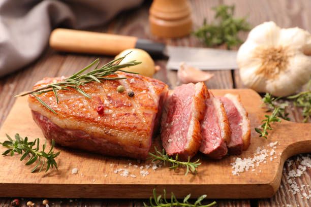

Magret
de canard


⟹ Plats Emblématiques ⟸
Le magret de canard est une invention relativement récente dans l'histoire de la cuisine gasconne. C'est au début des années 1960 que le chef auscitain André Daguin, alors à la tête de l'Hôtel de France à Auch, aurait le premier eu l'idée de cuire le filet du canard gavé pour le foie gras comme on cuit un steak, saisi à la poêle et servi encore rosé.

Avant cette innovation, seule la graisse et la cuisse du canard gras faisaient l'objet d'une véritable valorisation culinaire, sous forme de confit. Le blanc du canard gavé, plus épais et plus goûteux que celui d'un canard ordinaire, restait sous-exploité. Le terme « magret », dérivé du gascon « magre » signifiant maigre, viendrait justement désigner ce filet, plus maigre que le reste de l'animal.
Le succès du magret grillé a rapidement dépassé les frontières du Gers pour devenir un classique de toute la gastronomie française, tout en restant fortement associé à la Gascogne, terre du canard gavé et de l'élevage traditionnel de plein air.
Aujourd'hui, le magret de canard gersois est reconnu pour sa qualité, issue d'animaux nourris au maïs local, et se décline aussi bien dans les fermes-auberges que dans les grandes tables étoilées de la région.
La date de 1959 est généralement retenue pour la naissance du magret tel qu’on le connaît aujourd’hui. À l’Hôtel de France d’Auch, André Daguin eut l’idée de servir le filet du canard gras saisi et rosé, à la manière d’une viande rouge. Cette présentation rompait avec l’usage dominant qui destinait surtout le canard gras au confit et aux préparations de conservation.
Le mot « magret » vient du gascon magret, diminutif de magre, « maigre ». Il désigne le filet prélevé sur un canard ou une oie engraissé pour la production de foie gras : cette origine distingue le magret du simple filet de canard maigre.
Le magret fait partie des produits couverts par l’IGP « Canard à foie gras du Sud-Ouest ». L’INAO rattache ainsi officiellement cette pièce de viande à un ensemble de savoir-faire d’élevage, d’engraissement et de transformation caractéristiques du Sud-Ouest, dont le Gers constitue l’une des zones géographiques reconnues.
Magret séché : salé puis affiné plusieurs semaines, il se déguste finement tranché à l'apéritif, comme une charcuterie.
Magret aux figues ou au miel : une sauce sucrée-salée qui souligne le goût de la graisse et de la chair du canard.
Magret fumé : une préparation artisanale, souvent proposée en tranches sur des salades gersoises.
Magret à la plancha : une cuisson d'été rapide et vive, très prisée lors des fêtes de village.
Le magret de canard se retrouve sur toutes les tables du Gers, des fermes-auberges aux restaurants gastronomiques, souvent accompagné de pommes de terre sarladaises ou de légumes du potager.
Auch, ville où le magret aurait été inventé, compte de nombreuses adresses fidèles à la recette originale d'André Daguin.
Fermes-auberges gersoises proposent souvent un menu complet autour du canard, du magret grillé jusqu'au confit.
Fêtes votives et marchés de plein air l'été, où le magret grillé à la plancha embaume les places de village.